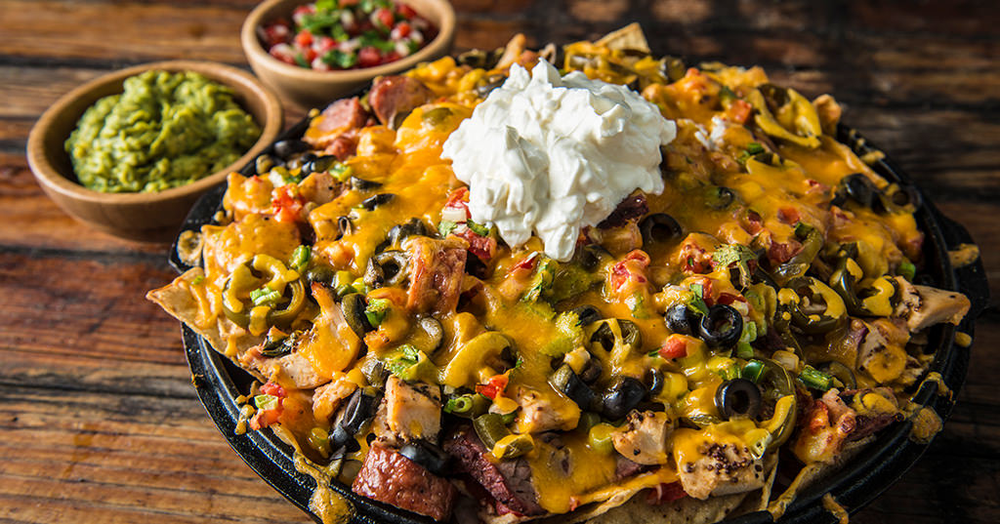

Ultimate Loaded Nachos

Description
This is “nacho” ordinary plate. This heaping pile of nachos is loaded with
tri-tip, chicken, and sausage, then topped with melted cheese
and all the classic fixins.
This recipe takes more time than the average plate of nachos,
but is well worth the effort!
You can adjust ingredient quantities to suit your preference.
Serve with extra chips if required.
| PREP TIME: 15 MIN |
| COOK TIME: 25 MIN |
| EFFORT: ★★ |
| YIELD: 4 SERVINGS |
Ingredients
- 1 bag tortilla chips
- 1/2 Cup fresh salsa
- 1 Pound kielbasa sausage, cooked and sliced
- 1 Cup shredded cooked chicken breast
- 1 Pound tri-tip, cooked and cubed
- 1/4 Cup scallions, sliced
- 1 Small jar jalapeños, sliced
- 1/4 Cup black olives, sliced
- 1 1/2 Cup cheddar cheese
- When ready to cook, set temperature 375℉
and preheat for 15 minutes.
-
On a large tray, spread out the tortilla chips evenly.
First, sprinkle the salsa on chips, then the Kielbasa sausage,
chicken and tri-tip. Top nachos with scallions, jalapeños,
olives and lastly the cheese.